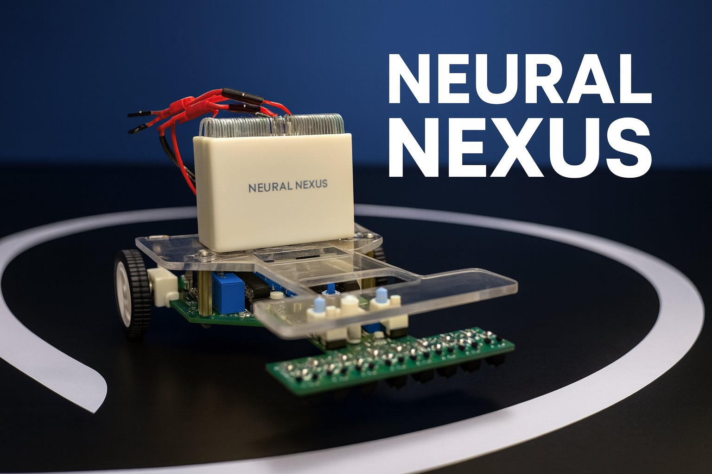

Fully Analog Line Follower
A microcontroller-free autonomous line follower for EN2091: sensing, PD control, PWM generation and motor driving all done in continuous-time analog hardware, with no firmware anywhere in the loop.

Overview
Most line followers process an IR sensor array in software. This one doesn't: there's no microcontroller, no programmable logic, and no code anywhere on the robot. An 8-channel TCRT5000 infrared array feeds resistor-weighted summing amplifiers built from LM324 op-amps, which continuously compute a single error voltage representing the line's position, direction of deviation and magnitude, entirely in continuous time.
That error voltage drives a hardware Proportional-Derivative controller (adjustable Kp and Kd set by trimpots rather than software constants) which reacts immediately with no ADC conversion, no sampling delay, and no loop-execution time. PWM for the motors is generated the same way: a Schmitt-trigger oscillator and analog integrator produce a stable triangular carrier, which a comparator mixes against the PD output to produce continuously variable, adjustable-frequency PWM. An L293D H-bridge then drives the two DC gear motors with independent left/right differential steering.
My focus was the drive side of the loop: designing the Triangular Waveform Generator and the comparator-based PWM generation circuitry, then carrying that through to motor control implementation, hardware assembly/soldering and end-to-end system debugging. The full analog signal path (sensing, PD control, and PWM/motor drive) was laid out on a custom 4-layer PCB to keep the ground plane clean and EMI low, since a noisy analog front end is far more forgiving in software than it is when the 'processor' is a breadboard of op-amps.
Key Features
- 01Fully analog control loop — zero microcontrollers, zero firmware, zero digital logic
- 028-channel TCRT5000 IR array with resistor-weighted analog error summation (LM324 op-amps)
- 03Hardware PD controller with adjustable proportional (Kp) and derivative (Kd) gain trimpots
- 04Analog triangular-wave PWM generator (Schmitt trigger + integrator + comparator) with adjustable frequency
- 05L293D H-bridge driving independent left/right differential steering with adjustable minimum wheel speed
- 06Custom 4-layer PCB with isolated analog/motor power rails and dedicated debugging switches
Demos
 YouTube
YouTube
Final Demo